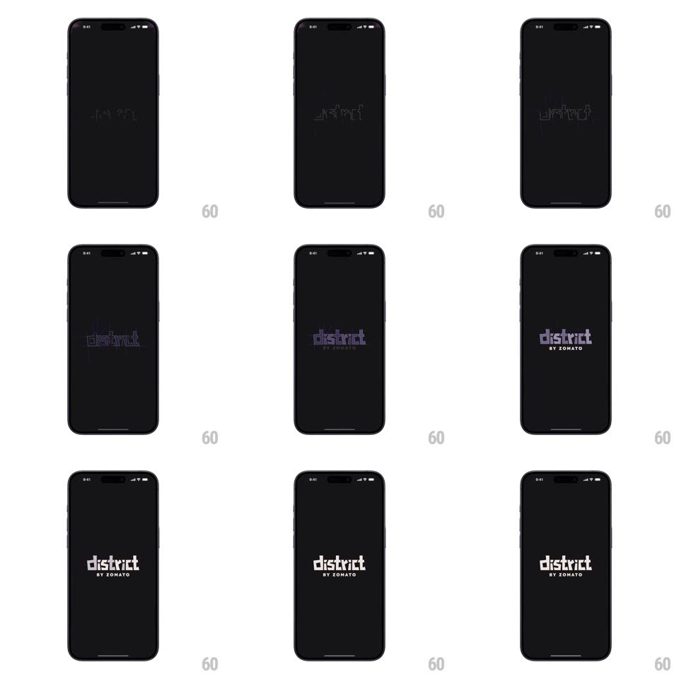

Media
Frame-by-frame

Rebuild this interaction 1:1: District's splash screen - on a black background, the "district" wordmark draws itself in thin neon outline strokes, the strokes fill to solid purple-white, "BY ZOMATO" appears beneath, and the whole logo settles before fading out.

Rebuild this interaction 1:1: District's splash screen - on a black background, the "district" wordmark draws itself in thin neon outline strokes, the strokes fill to solid purple-white, "BY ZOMATO" appears beneath, and the whole logo settles before fading out. ## Integration Integration: stack-agnostic spec - springs given as stiffness/damping, timed motions as duration + curve; map every value to your framework and animation library of choice. ## Scene Pure black splash screen. Center: the lowercase "district" wordmark in a rounded geometric sans, with "BY ZOMATO" in small caps beneath it. ## Motion spec Pattern: stroke-draw reveal to solid fill. - Each letter's outline draws on as a thin glowing stroke (trim path, ~1.2s total, letters staggered ~80ms left to right), with a faint purple glow bleeding around the active stroke. - Letters fill in from outline to solid (fill opacity 0 -> 1, ~400ms, following the draw with a ~300ms lag); color lands on a soft purple-white. - "BY ZOMATO" fades in below (200ms) once the wordmark is solid. - Hold ~600ms, then the whole logo fades out (300ms) into the app's first screen. ## Calibration - The draw is the star: keep strokes thin (~2px) and the glow subtle - neon, not laser. - Letter stagger follows reading order; the t's cross draws with its stem. ## Reduced motion Logo fades in complete (250ms), holds, fades out. ## Don't miss - Background stays pure black the entire time - no gradient, no texture. - The glow fades as the fill lands; they do not coexist at full strength.